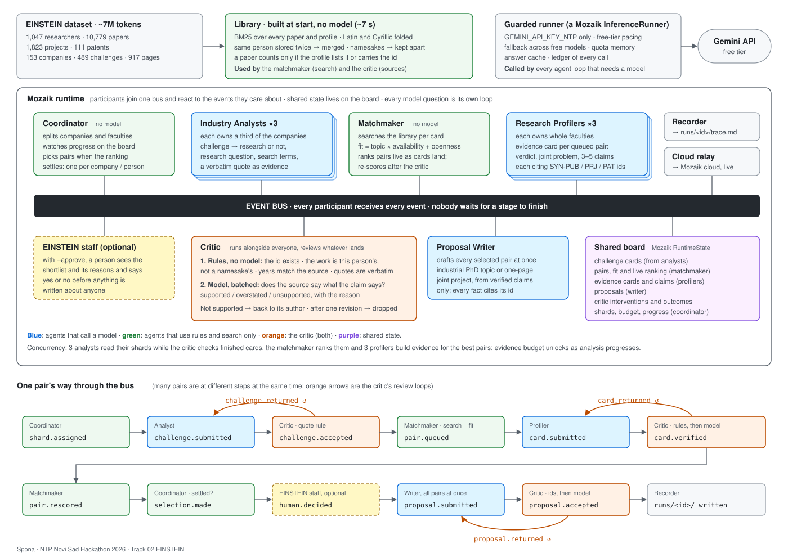

Spona
Agents on Mozaik that pair University of Novi Sad researchers with NTP Novi Sad companies and write the proposal for a first meeting. Every claim about a person or a company cites its record, and a critic agent checks the claims while the other agents are still working.
The track brief: the University of Novi Sad "has thousands of researchers, NTP Novi Sad hundreds of companies, yet they rarely work together."
Watch the run
Every bar is one agent loop: one model question with its own context, from the recorded run. Press play to replay it at speed. The analysts read their companies side by side, the profilers start on the best pairs while analysts are still reading, and the critic checks each result as it lands.
Every loop as a table
The critic at work
The proposals
Four drafts for four companies, as the run wrote them. Each opens with the company's need beside the researcher's work the critic checked, has the plan as a timeline, and ends with the evidence, what the critic sent back, and every source cited.
What the run found
What the companies asked for
What happened to each challenge
No close match at the university yet, by sector
How it works
Twelve participants join one Mozaik runtime and react to each other's events. Nobody calls anybody in order. Shared state is one board in Mozaik's RuntimeState.

- Search first, models second. The whole dataset is indexed with BM25 in about 7 seconds with no model call; Latin and Cyrillic are folded together. Models only see what search surfaced.
- Rules for the data's traps. People stored twice are merged, namesakes are kept apart, a paper counts only if the profile lists it or it carries the researcher's id, and someone who left the university is never proposed.
- Rules, then a model, in every review. The critic checks that cited ids exist and belong to the person, that years match and quotes are verbatim, then asks a model whether each source says what the claim says.
- Pairs, never people. Fit belongs to a pair. Title, seniority, publication counts and citations are not inputs, and a test checks it.